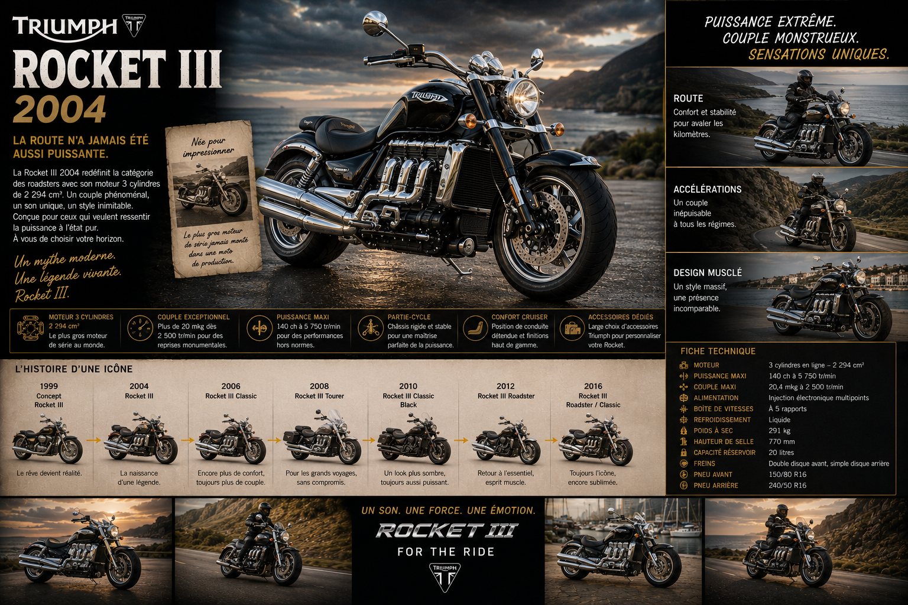
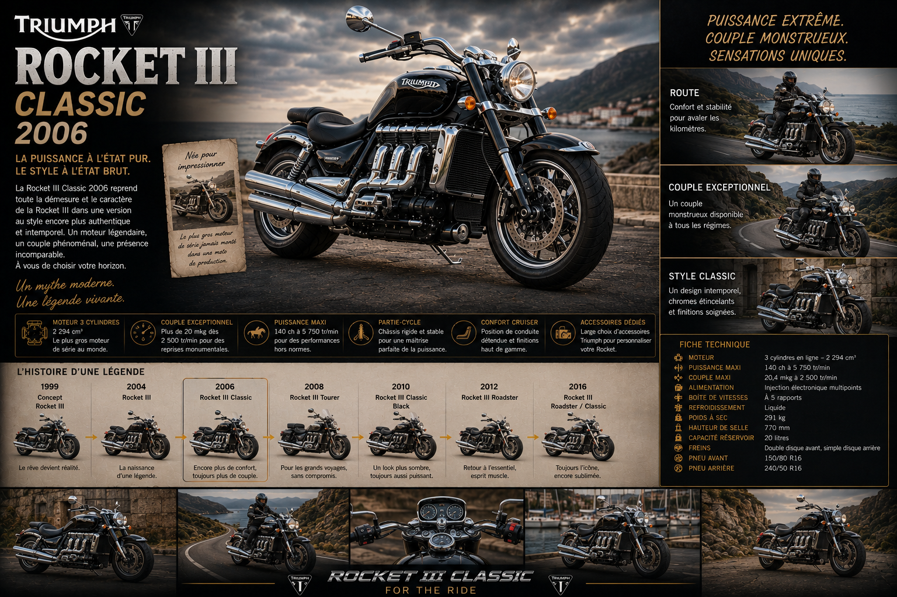
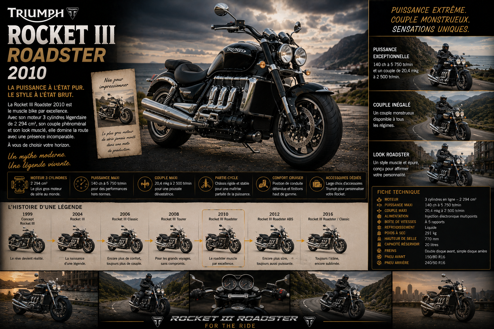
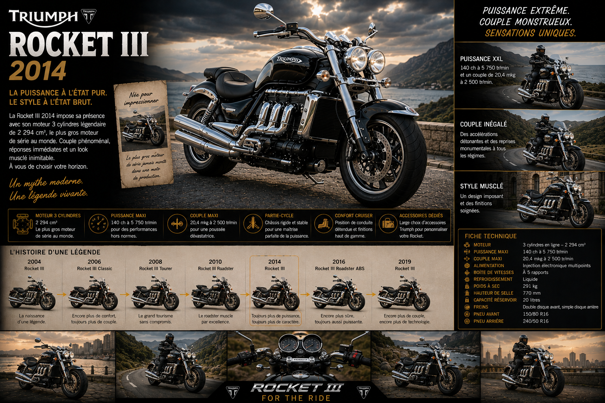
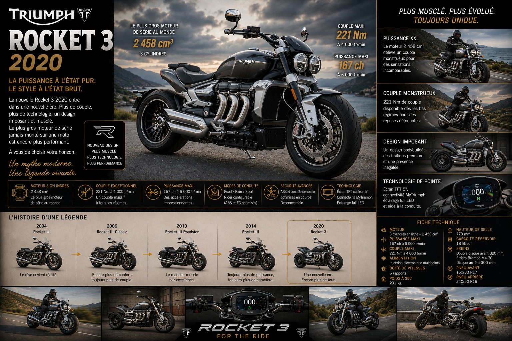
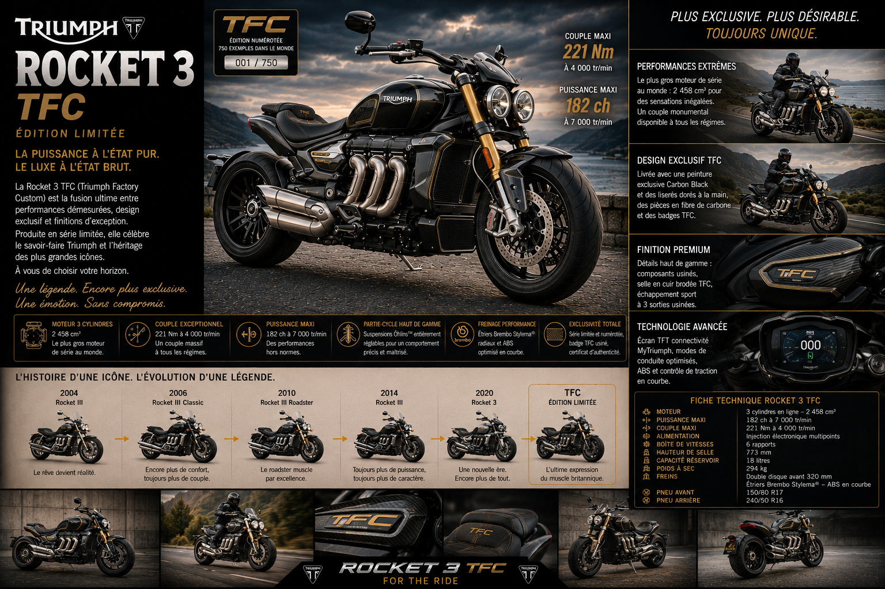

La Genèse — Une Idée Folle Devenue Réalité
Quand Triumph décide de construire l'impossible
Au début des années 2000, Triumph est en pleine ascension. La marque a réussi sa
renaissance, la gamme est solide, les ventes progressent. Mais l'équipe de développement
de Hinckley veut aller plus loin. Elle veut créer quelque chose qui n'existe nulle part
ailleurs. Une machine qui ferait parler d'elle non pas parce qu'elle est la plus rapide
ou la plus légère, mais parce qu'elle est tout simplement la plus extraordinaire.
L'idée germe autour d'une question simple et provocatrice : que se passerait-il si on
montait sur une moto un moteur digne d'une voiture de sport ? Pas un quatre cylindres
compact de sportive japonaise — un vrai bloc imposant, massif, à la cylindrée hors
norme, capable de produire un couple que les autres motos ne peuvent pas même imaginer.
Un moteur qui serait lui-même un spectacle. Un moteur qui serait la moto.
Le projet est baptisé en interne "Project Rocket". Les ingénieurs
de Hinckley se mettent au travail avec une liberté créatrice rare. Le brief est minimal :
pas de compromis, pas de limite imposée, juste la meilleure machine possible autour
du moteur le plus audacieux jamais conçu par Triumph.
Après plusieurs années de développement secret, la Triumph Rocket III est prête.
Et quand elle apparaît pour la première fois au public, au salon de Munich
en 2002, les réactions sont immédiates et unanimes : stupéfaction,
incrédulité, admiration. Le monde de la moto n'avait jamais rien vu de tel.
2004 — La Rocket III : La Bombe qui a Changé l'Histoire
2 294 cm³ — Le record absolu entre dans les livres

En 2004, la Triumph Rocket III entre en production
et dans la légende simultanément. Les chiffres parlent d'eux-mêmes et continuent de
faire l'effet d'une bombe même vingt ans après leur annonce.
Le moteur est un trois cylindres en ligne de 2 294 cm³ — soit
2,3 litres de cylindrée. Pour mettre ce chiffre en perspective :
c'est la cylindrée d'une Renault Clio ou d'une Volkswagen Polo. C'est plus de deux fois
la cylindrée d'une Harley-Davidson Sportster de l'époque. C'est un bloc qui n'a pas
d'équivalent sur deux roues, hier comme aujourd'hui.
Ce moteur développe 140 chevaux — ce qui n'est pas sa caractéristique
la plus impressionnante. Ce qui stupéfie vraiment, c'est le couple : 200 Nm
disponibles à seulement 2 500 tr/min. À titre de comparaison, une
sportive japonaise de 1 000 cm³ produit environ 100 à 110 Nm à son régime maxi.
La Rocket III en développe deux fois plus, presque au ralenti. C'est une quantité
d'énergie qui défie l'entendement sur deux roues.
Ce couple colossal se traduit de manière spectaculaire à la conduite. Quand on ouvre
les gaz sur la Rocket III — même en troisième, quatrième, cinquième rapport — la
machine accélère avec une force et une régularité qui semblent venir d'ailleurs.
Pas de cri, pas d'hystérie — juste une poussée continue, irrésistible, implacable,
comme si une main géante poussait la moto dans le dos sans jamais se fatiguer.
Les premiers pilotes d'essai cherchent leurs mots pour décrire la sensation. La plupart
finissent par abandonner et par dire simplement : "Vous devez l'essayer pour comprendre."
Le moteur est disposé longitudinalement dans le cadre — c'est-à-dire dans l'axe de la
moto, comme sur une voiture, plutôt que transversalement comme sur la quasi-totalité
des motos. Ce choix technique est motivé par les dimensions du bloc : un moteur aussi
large ne pourrait pas tenir en configuration transversale sans sortir exagérément des
flancs de la moto. La disposition longitudinale permet d'intégrer le bloc de manière
cohérente et esthétique.
Le design de la Rocket III est à la hauteur du moteur. C'est une machine massive,
imposante, dont la silhouette est dominée par l'immensité du bloc moteur. Les trois
cylindres sont visibles, exposés, mis en scène comme les pièces maîtresses qu'ils sont.
Les silencieux — trois de chaque côté sur les premières versions — soulignent la
monstruosité bienveillante de la machine. Tout est grand, tout est large, tout est
généreux. La Rocket III n'est pas une moto qu'on remarque — c'est une moto qui s'impose.
La roue arrière est large — 240 mm de section — une largeur de pneu
qui n'existe sur aucune autre moto de série à l'époque. Cette roue massive, associée
à la masse du moteur, donne à la Rocket III une stabilité et une présence en ligne droite
incomparables. Sur autoroute, à vitesse de croisière, c'est l'une des motos les plus
stables et les plus reposantes qui soit — le couple gigantesque permet de rouler en
sixième rapport dès 50 km/h sans le moindre à-coup.
La presse mondiale est sous le choc. Les essais comparatifs n'ont aucun sens — il n'y
a rien à comparer à la Rocket III, elle est dans une catégorie à part entière.
Les magazines lui consacrent des dossiers spéciaux, des essais longs formats, des
analyses techniques approfondies. Certains journalistes la détestent — trop lourde,
trop démesurée, trop tout. D'autres en tombent éperdument amoureux et ne veulent plus
la rendre. Personne n'est indifférent. C'est exactement ce que Triumph voulait.
2005–2009 — Les Premières Évolutions : Classic et Touring
La Rocket se décline pour toucher plus large

Dès les premières années de commercialisation, Triumph comprend que la Rocket III
peut se décliner en plusieurs personnalités. La version originale, orientée roadster,
attire les amateurs de sensations brutes et de style moderne. Mais le moteur colossal
et la position de conduite détendue de la Rocket l'orientent naturellement vers d'autres
usages — le cruising à l'américaine, le grand tourisme confortable, les longues distances
à la californienne.
En 2006, la Rocket III Classic fait son apparition.
C'est une Rocket habillée dans un style plus vintage et plus américain : chrome abondant
sur le moteur et les pièces mécaniques, guidon relevé de type pullback, selle
basse et large, jantes à rayons. Elle conserve évidemment le moteur 2 294 cm³ et son
couple de titan, mais l'enveloppe extérieure évoque davantage les grandes Harley-Davidson
ou Indian que le roadster européen.
La Rocket III Classic s'impose immédiatement comme une alternative
crédible et séduisante dans le segment des customs de grosse cylindrée, dominé par
les marques américaines. Des milliers de propriétaires de Harley regardent la Rocket
Classic avec un intérêt non dissimulé — même puissance visuelle, même esprit cruiser,
mais avec un moteur encore plus imposant et une qualité de fabrication qu'on associe
davantage à l'Europe qu'à Milwaukee.
En 2008, la Rocket III Touring complète la gamme.
Cette version est pensée pour les longs voyages à deux : selle passager confortable
et bien équipée, poignées passager intégrées, pare-brise large offrant une protection
aérodynamique efficace, porte-bagages arrière, valises en option. Le Touring transforme
la Rocket en grand tourer capable d'avaler des milliers de kilomètres dans un confort
royal, porté par ce couple qui rend l'autoroute aussi simple que la promenade du dimanche.
2010 — La Rocket III Roadster : Le Retour aux Sources
Plus légère, plus sportive, toujours aussi monstrueuse

En 2010, Triumph ajoute une nouvelle version à la famille Rocket III :
la Roadster. C'est la version la plus dépouillée, la plus sportive,
la plus focalisée sur la conduite pure de toute la gamme Rocket — ce qui, dans le
contexte de la machine la plus lourde et la plus couplée du marché, prend une
signification particulière.
La Roadster abandonne une partie des chromes et des ornements de la Classic pour une
présentation plus moderne et plus agressive. Le guidon est plus bas. La selle est
monoplaces avec bulle arrière relevée. Les silencieux sont retravaillés pour une
sonorité encore plus spectaculaire. La ligne est tendue, musclée, directe.
Le moteur reste le 2 294 cm³ identique, mais la cartographie est légèrement revue
pour affiner la réponse à l'accélérateur — la rendre plus progressive en ville et
plus explosive quand on ouvre vraiment. Les suspensions reçoivent de nouveaux réglages
qui améliorent la tenue de route dans les virages. La Roadster se montre étonnamment
agile pour une machine de sa masse — pas légère, bien sûr, mais fluide, prévisible,
rassurante dans les enchaînements.
La Rocket III Roadster s'adresse aux passionnés qui veulent le maximum de sensations
de la Rocket dans le package le plus épuré possible. Elle connaît un beau succès
commercial et contribue à élargir encore la base de clientèle du modèle.
2012–2018 — Une Décennie de Maturité
La Rocket III s'affine sans jamais changer de nature

Entre 2012 et 2018, la Rocket III connaît une période d'évolution
continue et tranquille. Il ne s'agit pas de révolutions — la formule est déjà si unique
et si aboutie qu'elle n'en a pas besoin. C'est un travail d'orfèvre patient, millésime
après millésime, qui améliore progressivement chaque aspect de la machine sans jamais
toucher à ce qui fait son identité fondamentale.
Le moteur 2 294 cm³ reçoit régulièrement des mises à jour de cartographie qui améliorent
la réponse à l'accélérateur et réduisent légèrement la consommation de carburant —
un point sensible sur une machine de cette cylindrée. La gestion thermique est améliorée
pour réduire la chaleur ressentie par le pilote en conditions urbaines, un des rares
défauts que les propriétaires mentionnaient sur les premières versions.
L'ABS fait son apparition en option puis en standard sur l'ensemble de la gamme.
C'est une évolution bienvenue sur une machine dont la puissance de freinage est, compte
tenu du poids et du couple, un paramètre critique. Les disques avant passent à
320 mm sur les versions les plus récentes.
Les finitions progressent considérablement. Les pièces chromées sont traitées avec
plus de soin. Les peintures sont plus profondes, plus riches. Les selles reçoivent des
matériaux de meilleure qualité. Chaque millésime est un peu mieux fini que le précédent —
le signe d'une marque qui prend soin de ses machines et de ses clients.
Pendant toutes ces années, la Rocket III reste une machine à part dans le paysage
moto mondial. Elle n'a pas d'équivalent, pas de concurrent direct, pas de moto qui
occupe le même espace qu'elle. C'est à la fois sa force et sa singularité : elle est
unique, sans alternative possible, un objet de désir absolu pour ceux qui l'aiment
et une curiosité fascinante pour les autres.
2020 — La Rocket 3 : La Renaissance Totale
Plus légère, plus puissante, plus moderne — Le chef-d'œuvre absolu

2020. Triumph frappe le coup le plus spectaculaire de toute l'histoire
de la Rocket. La marque ne se contente pas de mettre à jour le modèle — elle le
réinvente de fond en comble, de zéro, sans conserver un seul composant de la génération
précédente. La nouvelle Rocket 3 est une machine entièrement nouvelle,
et elle est époustouflante.
La première annonce fait l'effet d'une bombe : le nouveau moteur développe
167 chevaux et un couple de 221 Nm. Ces chiffres
sont irréels. Deux cent vingt et un Newton-mètres sur une moto. C'est plus que
la plupart des voitures de tourisme. C'est plus que certaines voitures de sport.
C'est un chiffre qui nécessite quelques secondes de pause pour être vraiment absorbé.
Et pourtant, ce n'est même pas la nouvelle la plus stupéfiante. La vraie révolution,
c'est le poids. Grâce à un travail d'ingénierie extraordinaire — nouveau cadre en
aluminium, nouveaux bras oscillants, nouvelles roues, nouvelles pièces allégées partout —
la Rocket 3 perd 40 kg par rapport à son prédécesseur. Quarante
kilogrammes. Sur une moto qui pesait déjà plus de 300 kg, c'est une transformation
radicale. La Rocket 3 pèse désormais 291 kg plein de carburant —
toujours imposant, bien sûr, mais dans une toute autre dimension que l'ancienne génération.
Ce gain de poids combiné au gain de puissance donne un rapport puissance/poids
sensiblement amélioré. La Rocket 3 accélère plus fort, freine mieux, change de direction
avec une facilité qu'on n'attendait tout simplement pas d'une machine aussi massive.
Les premières sorties presse sont unanimes : la Rocket 3 se conduit beaucoup mieux
que les chiffres ne laissent supposer. Elle étonne, elle surprend, elle séduit.
Le moteur — 2 458 cm³ de perfection
Le nouveau moteur est entièrement revu. La cylindrée augmente légèrement à
2 458 cm³ — toujours le trois cylindres en ligne longitudinal,
mais dans une version plus sophistiquée, plus moderne, plus efficiente. Les culasses
sont nouvelles, l'injection électronique est entièrement reprogrammée, la distribution
est optimisée. Le moteur répond aux normes Euro 5 tout en gagnant significativement
en puissance par rapport à la version précédente — un exploit technique remarquable.
La courbe de couple est spectaculaire : les 221 Nm sont disponibles
dès 4 000 tr/min, et la courbe reste au-dessus de 200 Nm sur toute
une large plage de régimes. En pratique, cela signifie qu'on peut rouler en sixième
rapport à 40 km/h et accélérer sans rétrograder jusqu'à la vitesse maximale avec une
facilité déconcertante. Le moteur ne demande jamais d'efforts. Il est là, disponible,
généreux, inépuisable.
La sonorité est travaillée avec un soin particulier. Les ingénieurs de Triumph ont
accordé autant d'attention au son qu'aux performances. Le résultat : un grondement
grave et profond à bas régime, qui monte progressivement en intensité à mesure que
les tours grimpent, pour atteindre à pleine charge un rugissement qui fait vibrer
l'asphalte sous les roues. C'est une bande-son digne du moteur le plus extraordinaire
de l'industrie moto.
Le châssis — La légèreté comme obsession
Le cadre est entièrement nouveau en aluminium à haute résistance. Chaque pièce a été
repensée dans le seul but d'éliminer le poids superflu. Les bras oscillants sont des
pièces usinées dans la masse d'une précision remarquable. Les roues sont des jantes
à rayons en Y, à la fois légères et visuellement spectaculaires.
Les suspensions sont entièrement réglables. La fourche avant est une unité inversée
de 47 mm. L'amortisseur arrière est un mono-amortisseur à bonbonne
déportée, réglable en précontrainte et en détente. L'ensemble procure une tenue de
route et un confort que la génération précédente ne pouvait pas offrir.
Les freins sont des Brembo Stylema à l'avant — les mêmes qu'on trouve
sur la Ducati Panigale V4 et la Street Triple 1200 RS — associés à des disques de
320 mm. L'ABS cornering Bosch est de série. Pour
une machine de ce poids et de ce couple, disposer des meilleurs freins disponibles
n'est pas un luxe — c'est une nécessité absolue.
L'électronique — Dans l'ère moderne
La Rocket 3 entre enfin dans l'ère de l'électronique sophistiquée. Le tableau de bord
est un écran TFT couleur de 5 pouces, lisible dans toutes les conditions
de luminosité. Trois modes de conduite sont disponibles — Road, Rain et Sport — qui
modifient la cartographie moteur et la sensibilité du contrôle de traction.
Le contrôle de traction est réglable sur plusieurs niveaux. L'anti-wheeling intervient
pour maîtriser la roue avant dans les accélérations violentes — une aide utile sur
une machine développant 221 Nm. L'assistance au démarrage en côte est de série.
La connectivité Bluetooth avec l'application Triumph My Ride permet de personnaliser
les réglages depuis son smartphone.
Deux versions : R et GT
La Rocket 3 est proposée en deux versions aux personnalités bien distinctes.
La Rocket 3 R est la version roadster : guidon bas et large, selle
sportive, ligne épurée et musclée. Elle s'adresse aux amateurs de sensations pures
et de design contemporain. La Rocket 3 GT est la version grand tourisme :
guidon plus haut pour une position plus détendue sur longue distance, selle confort,
bulle de protection plus généreuse, équipement bagage en option. Elle est pensée pour
les voyageurs qui veulent avaler les kilomètres dans le confort le plus absolu, portés
par le couple le plus généreux du marché.
Les deux versions sont proposées dans des coloris distincts et soigneusement choisis.
Le Sapphire Black, le Silver Ice, le Korosi
Red — chaque teinte est travaillée pour mettre en valeur les volumes imposants
et les lignes musclées de la machine. La Rocket 3, quelle que soit sa couleur, est
une moto qui s'admire.
L'accueil est triomphal. La presse mondiale est unanime : la Rocket 3 est la meilleure
Rocket jamais construite, et de très loin. Elle remporte les prix de "Meilleur
Custom/Cruiser" dans de nombreux pays dès sa première année. Les commandes
affluent. Triumph ne suffit pas à satisfaire la demande dans les premiers mois.
La liste d'attente s'allonge chez les concessionnaires.
Les Éditions Spéciales — Quand la Rocket Devient Art
Des machines qui dépassent le simple objet motorisé

Depuis son lancement, la Rocket III puis la Rocket 3 ont inspiré plusieurs éditions
spéciales qui poussent encore plus loin le concept de la machine extraordinaire.
La Rocket III TFC (Triumph Factory Custom) est l'une des éditions les
plus exclusives jamais produites par Triumph. Lancée en série très limitée, elle reprend
la base de la Rocket 3 en y ajoutant un traitement esthétique et des équipements d'une
sophistication extrême : finitions en carbone sur les principaux panneaux de carrosserie,
jantes forgées exclusives, selle cuir main, peinture métallisée appliquée en plusieurs
couches et polie à la main. Chaque détail est traité comme un bijou. Chaque exemplaire
est numéroté.
Ces éditions spéciales atteignent des cotes élevées sur le marché de l'occasion dès
leur lancement. Elles s'adressent aux collectionneurs, aux passionnés qui veulent
la version la plus exclusive, la plus rare, la plus précieuse de la machine la plus
exceptionnelle du marché. Chaque détail compte, chaque finition est parfaite, chaque
exemplaire est un objet unique dans l'histoire de Triumph.
La Rocket et les Records — Plus Vite, Plus Fort, Plus Loin
Une machine qui attire les amateurs de dépassement
Il était inévitable que la machine à la plus grande cylindrée de production mondiale
attire les amateurs de records. Et la Rocket III n'a pas déçu de ce côté-là non plus.
Dès les premières années de commercialisation, des préparateurs et des passionnés
du monde entier s'emparent de la Rocket III pour tenter d'en extraire encore plus.
Sur les salins de Bonneville — là où les records de vitesse moto ont toujours été
établis — des Rocket III préparées ont battu plusieurs records de catégorie, certaines
dépassant les 300 km/h avec des moteurs portés à des cylindrées
encore plus folles.
Des records de traction, de wheeling, de démarrage en côte — la Rocket III s'impose
partout où le couple est roi. Sa réputation dans le monde du drag racing moto est
particulièrement forte : avec ce couple disponible dès les très bas régimes, la Rocket
est capable de démarrages explosifs qui laissent sur place des machines bien plus légères
et théoriquement plus puissantes.
Triumph elle-même a utilisé la Rocket pour des démonstrations officielles de performance.
Des journalistes ont été invités à assister à des accélérations chronométrées qui ont
confirmé les chiffres annoncés — et parfois les ont dépassés. La Rocket ne ment pas
sur ses performances. Elle fait exactement ce qu'elle annonce, et souvent un peu plus.
La Rocket dans la Culture — L'Objet de Tous les Regards
La moto qui arrête les passants dans la rue
Peu de motos ont le pouvoir d'arrêter les passants dans la rue. La Rocket en fait partie.
Garer une Rocket III dans une rue commerçante, c'est garantir qu'en revenant dix minutes
plus tard, plusieurs personnes seront encore là à la regarder, à tourner autour, à
se demander ce que c'est et comment c'est possible.
Ce pouvoir d'attraction est l'une des caractéristiques les plus souvent mentionnées
par les propriétaires de Rocket. On sort rarement d'un parking avec une Rocket sans
qu'un inconnu engage la conversation — des motards qui connaissent et qui admirent,
des automobilistes qui ne connaissent pas et qui sont stupéfaits, des enfants qui
demandent si c'est une vraie moto. La Rocket crée du lien social partout où elle va.
Dans les rassemblements moto, la Rocket occupe une place à part. Elle attire les
regards même quand elle est entourée de machines bien plus rares et bien plus exotiques.
Il y a quelque chose dans ses dimensions, dans sa présence physique, dans l'idée même
de ce moteur de 2,3 litres sur deux roues — quelque chose qui fascine universellement,
au-delà des catégories et des préférences habituelles.
Les propriétaires de Rocket forment une communauté soudée et passionnée. Ils se
reconnaissent sur la route — un signe de la main, un hochement de tête, un sourire
complice entre gens qui partagent un secret. Le secret que c'est possible, que ça
existe, que cette machine est réelle et qu'elle est meilleure encore à conduire
qu'à regarder.
L'ADN Rocket — La Philosophie du Gigantisme Assumé
Ce que la Rocket dit de Triumph
La Rocket n'est pas une moto comme les autres — on l'a compris. Mais elle est aussi
le reflet le plus direct et le plus honnête de la philosophie profonde de Triumph.
Elle dit, plus clairement que n'importe quel discours, ce que la marque pense d'elle-même
et de ce que doit être une moto d'exception.
Le courage comme valeur fondamentale. Lancer la Rocket III en 2004
était un pari absolument insensé. Aucun bureau d'étude raisonnable, aucun consultant
en stratégie sérieux n'aurait validé ce projet. Et pourtant, Triumph l'a fait. Parce
que Triumph a toujours eu le courage de faire ce que les autres n'osent pas. C'est dans
l'ADN de la marque depuis les années 1950, depuis les victoires à Daytona Beach et les
records de Bonneville.
Le trois cylindres érigé en absolu. Quand on veut construire la moto
à la plus grande cylindrée du monde, le choix du moteur trois cylindres peut paraître
contre-intuitif. Pourquoi pas un V-twin dans la tradition des customs, ou un quatre
cylindres pour la puissance ? Parce que Triumph est Triumph, et que le trois cylindres
est son identité, son choix, sa signature. La Rocket assume ce choix jusque dans
l'excès — et l'excès lui va parfaitement.
Le couple comme philosophie de conduite. Là où d'autres motos cherchent
la puissance maximale, la vitesse de pointe, le régime maxi, la Rocket cherche le couple.
Toujours le couple. Disponible maintenant, tout de suite, sans condition, sans attendre
que le moteur monte en régime. Cette philosophie change fondamentalement l'expérience
de conduite — on n'utilise pas une Rocket comme on utilise une sportive. On la pilote
différemment, plus lentement en régime, plus fort en sensations.
Épilogue — L'Inégalée, l'Inégalable
Vingt ans après l'apparition de la première Rocket III, le record qu'elle détenait
en 2004 est toujours valable. Aucun constructeur, nulle part dans le monde, n'a osé
ou voulu construire une moto de série avec une cylindrée plus grande. La Triumph Rocket
est et reste la moto de production à la plus grande cylindrée de l'histoire. C'est un
record qui ne ressemble à aucun autre — pas une question de vitesse, de puissance ou
de performances chronométrées, mais une affirmation d'ambition et d'audace que personne
d'autre n'a eu la témérité de remettre en question.
La Rocket 3 de 2020 a élevé le concept à un niveau que même ses créateurs n'avaient
peut-être pas anticipé. Plus légère, plus puissante, plus raffinée, plus technologique —
et pourtant toujours aussi fondamentalement Rocket dans son âme et dans sa philosophie.
Elle a prouvé que le concept n'était pas un coup d'éclat ponctuel, mais une vision
durable, une ligne de conduite, un engagement de Triumph envers ceux qui veulent
quelque chose qu'on ne trouve nulle part ailleurs.
Parce que c'est ça, la Rocket. Elle est là pour ceux qui trouvent toutes les autres
motos trop sages, trop raisonnables, trop attendues. Pour ceux qui veulent, une seule
fois, sentir ce que ça fait d'avoir 221 Nm sous la main droite et un horizon dégagé
devant soi. Pour ceux qui savent que certaines expériences, dans la vie, sont
irremplaçables.
La Rocket est une de ces expériences.
For the Ride. For the Extraordinary. For the Record.